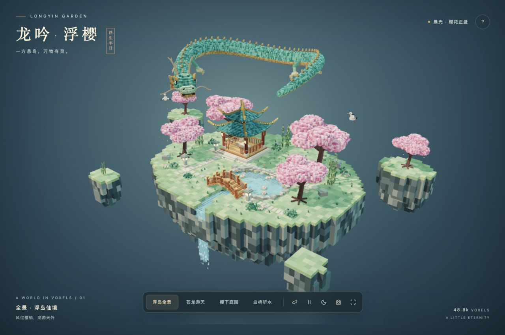
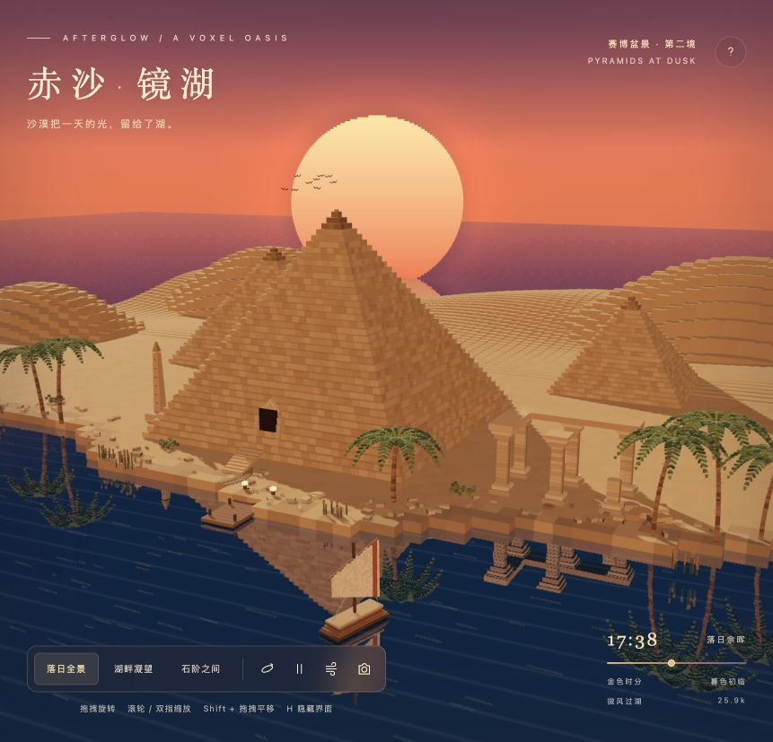
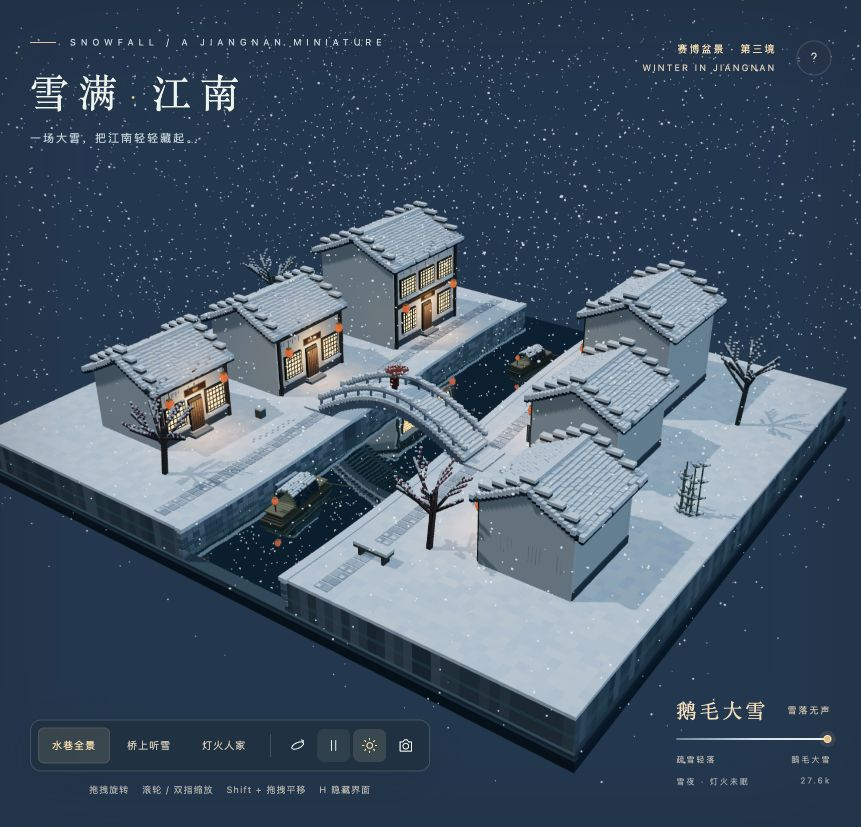
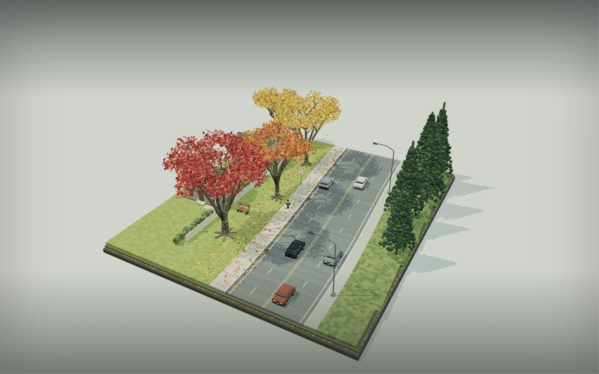

01 / LONGYIN GARDEN赛博盆景
把风景缩进方寸，让时间慢一点。
选择一处，进去坐坐。
04 SCENES
INTERACTIVE VOXEL WORLDS
INTERACTIVE VOXEL WORLDS

02 / AFTERGLOW
03 / WINTER IN JIANGNAN
04 / AUTUMN ON THE AVENUE把风景缩进方寸，让时间慢一点。
选择一处，进去坐坐。

01 / LONGYIN GARDEN
02 / AFTERGLOW
03 / WINTER IN JIANGNAN
04 / AUTUMN ON THE AVENUE